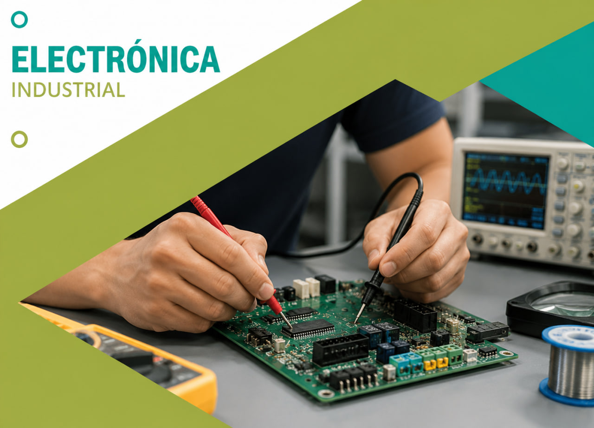
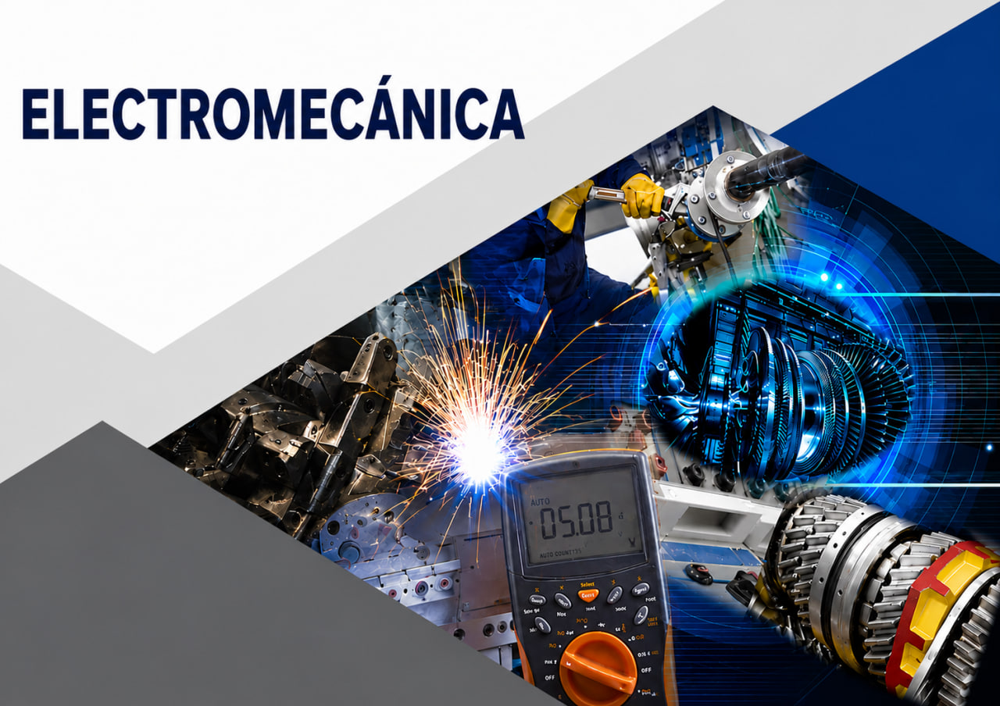
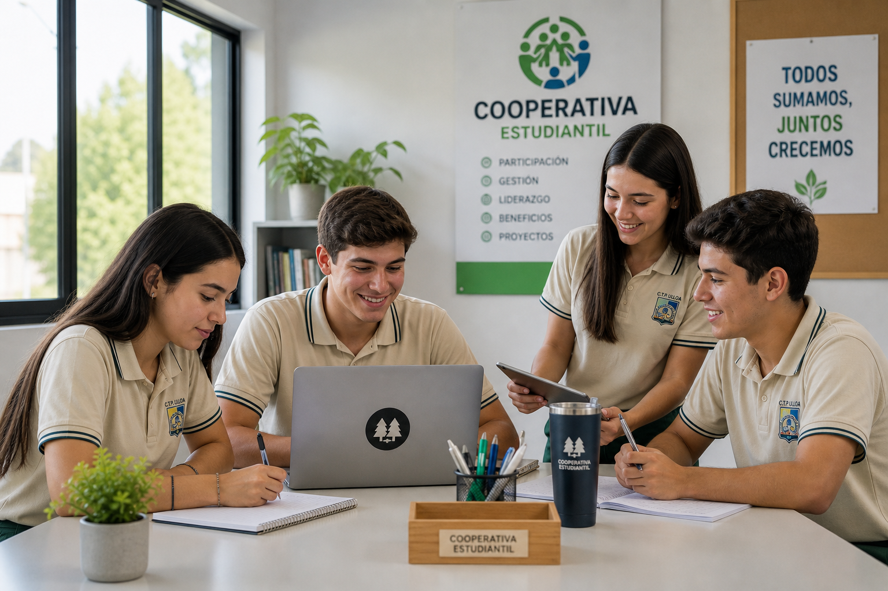

De la idea al prototipo: aprender haciendo
Los proyectos STEAM+H invitan a investigar, probar, fallar, corregir y compartir. El aprendizaje se vuelve visible cuando el estudiantado construye respuestas a necesidades concretas.
Somos STEAM+H
Entradas, reflexiones y experiencias sobre ciencia, tecnología, ingeniería, artes, matemática y humanidades aplicadas a la formación integral del estudiantado.
STEAM+H conecta el pensamiento técnico con la resolución de problemas reales. La ciencia permite observar, la tecnología crear herramientas, la ingeniería construir soluciones, las artes comunicar ideas, la matemática tomar decisiones y las humanidades cuidar el impacto de cada proyecto.
Este blog reúne reflexiones, experiencias y propuestas para que la comunidad educativa comprenda cómo un aprendizaje integral puede transformar el aula, el taller, el laboratorio y la convivencia institucional.
Blog STEAM+H

Los proyectos STEAM+H invitan a investigar, probar, fallar, corregir y compartir. El aprendizaje se vuelve visible cuando el estudiantado construye respuestas a necesidades concretas.

Las artes ayudan a convertir datos, propuestas técnicas y prototipos en mensajes claros, útiles y comprensibles para distintas personas y comunidades.

Incorporar humanidades significa preguntar por la convivencia, la ética, la comunicación y el bienestar que acompañan cada decisión técnica.

Observar, idear, construir y evaluar ayuda a que las soluciones técnicas respondan a necesidades reales del entorno educativo y comunitario.

La matemática permite leer evidencias, comparar alternativas y justificar decisiones dentro de proyectos que integran varias áreas de aprendizaje.

Todo proyecto inicia con una pregunta. La observación y la experimentación ayudan a comprender el problema antes de proponer una respuesta.

La colaboración fortalece habilidades de comunicación, escucha y liderazgo, necesarias para que una idea técnica pueda crecer en equipo.

STEAM+H cobra sentido cuando las propuestas dialogan con el colegio, las familias y las comunidades donde vive el estudiantado.

En el aula taller se combinan conocimiento técnico, creatividad y criterio humano para convertir el aprendizaje en experiencias concretas.
Enfoque institucional